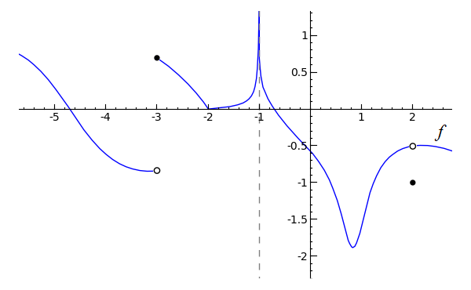

One-Sided Limits
Our topic of discussion in this section is one-sided limits, which builds upon the preceding lesson on continuity. Create a new worksheet called 03-One-Sided Limits. The basis of one-sided limits is that when a function jumps suddenly from one value to another, it often is not possible to describe the function's behavior with a single limit. What we can do, though, is to describe the function's behavior from the right and from the left using two limits. Consider the following graph, the code of which is provided:
p1 = plot(-x^2+6, x, 0, 2) p2 = plot(x-1, x, 2, 4) pt1 = point((0, 6), rgbcolor='black', pointsize=30) pt2 = point((2, 2), rgbcolor='white', pointsize=30, faceted=True) pt3 = point((2, 1), rgbcolor='black', pointsize=30) pt4 = point((4, 3), rgbcolor='black', pointsize=30) (p1+p2+pt1+pt2+pt3+pt4).show(xmin=0, xmax=4, ymin=0, ymax=6)Toggle Explanation Toggle Line Numbers
1-2) Plot -x2+6 from 0 to 2, x-1 from 2 to 4
3-6) Create three closed points, one open
7) Combine the plots and points, then show the result with the given x and y boundaries
The above function has a discontinuity at x=2, and since the two pieces of the function approach different values:
You probably see where this is going. What we can say that the limit of f(x) as x approaches 2 from the left is 2, and the limit of f(x) as x approaches 2 from the right is 1. If you were to write this, it would look like:
 and
and 
The minus sign indicates "from the left", and the plus sign indicates "from the right". Since the limit of f(x) as x approaches 2 from the right is equal to f(2), f(x) is said to be continuous from the right at 2. The limit of f(x) as x approaches 2 from the left does not equal f(2), however, so f(x) is not continuous from the left at 2.
One-sided limits are usually fairly straightforward. However, be aware that when a function approaches a vertical asymptote, such as at x=0 in the following graph, you would describe the limit of the function as approaching -oo or oo, depending on the case. A vertical asymptote is an x-value of a function at which one or both sides approach infinity or negative infinity.

plot(1/x, x, -6, 6, randomize=False).show(ymin=-5, ymax=5, xmin=-5, xmax=5)Toggle Explanation Toggle Line Numbers
1) Plot 1/x from -6 to 6. randomize=False produces a more consistent result when this particular function is plotted.
Here, we would say that the limit of f(x) as x approaches zero from the left is negative infinity and that the limit of f(x) as x approaches zero from the right is infinity. The limit of f(x) as x approaches zero is undefined, since both sides approach different values. Visually,
 , and
, and
 is undefined.
is undefined.
Practice Problems
(a) At which points is f discontinuous?
(b) For each of these points, determine whether f(x) is continuous from the right, from the left, or neither.
(c) Classify any points of discontinuity as either removable or nonremovable.

(a) Toggle answer
(b) Toggle answer
(c) Toggle answer